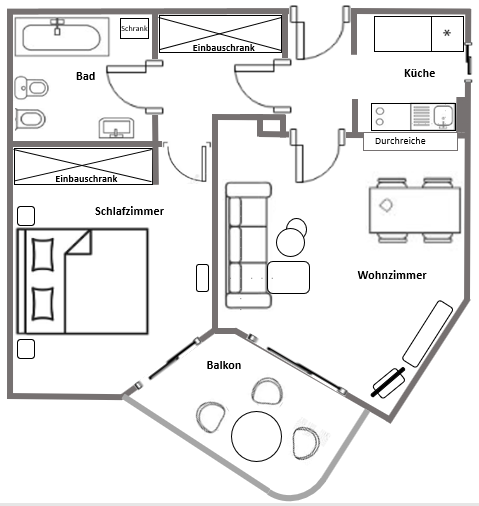
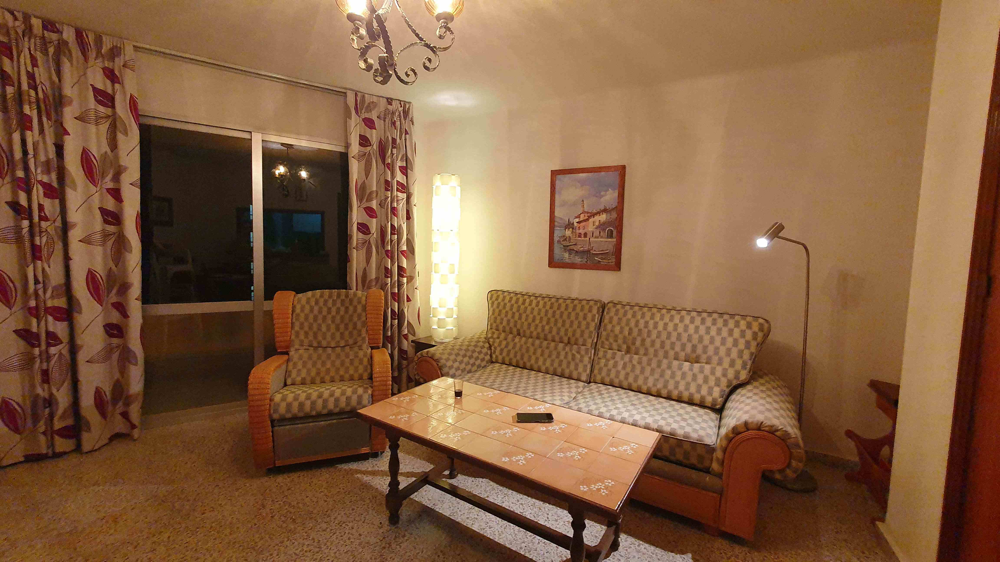
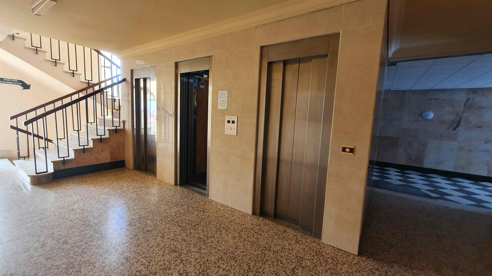

Planen Sie einen Urlaub zu zweit an der Costa del Sol?
Unsere Ferienwohnung bietet die ideale Unterkunft – egal ob Sie Strand, Wandern, Kultur oder Sightseeing bevorzugen.
- Unsere Ferienwohnung mit Schlafzimmer, Wohnzimmer, Küche, Bad und Balkon liegt in unmittelbarer Strandnähe in Torrox-Costa.
- Die Wohnung befindet sich in einer gepflegten Apartmentanlage mit hauseigenem, großen Außenpool sowie Kinderbecken.
- Der Flughafen Malaga ist etwa 65 km entfernt und mit Taxi, Schnellbus, Linienbus oder Mietwagen gut erreichbar.
- Granada, Cordoba, Marbella, Gibraltar, Malaga, Nerja und viele andere touristische Highlights lassen sich in Tagesausflügen entdecken.
Apartment
- 52 qm große Ferienwohnung mit Schlafzimmer (Doppelbett), Wohnzimmer, Küche, Bad
- Balkon auf Ostseite mit Meerblick in der 7. Etage
- Kühlschrank mit Gefrierfach, Herd mit 2 Kochplatten, Mikrowelle, Toaster, Kaffeemaschine
- Bade-, Hand-, Geschirrtücher, Kaffeefilter etc.
- Bad mit WC, Bidet, Wanne mit Duscharmatur
- kostenloses WLAN
- TV mit deutschen Sendern
- Strandmatten, Sonnenschirme, Luftmatratzen etc.
- hauseigene Poolanlage mit Garten
- Nichtraucher-Apartment
- keine Haustiere





Urlaub in Torrox
- langer flacher Sandstrand- Strandliegen mit Duschen direkt vor dem Haus, Standup-Paddling, Schwimmen und Tauchen im Meer, Bootsverleih
- Schwimmen im hauseigenen Pool
- Spaziergang auf der Promenade in beide Richtungen
- Wanderung nach Torrox-Pueblo (beschildert) an Obstplantagen wie Avocado- und Mangobäumen vorbei
- Schlemmen und Genießen auf der Promenade – Fisch vom Grill, Paella, Fleisch vom Spieß, Cocktails, Eis, Sangria, Wein
- Bäckereien und spanischer kleiner Supermarkt mit frischem Obst und Gemüse, Wurst- und Käsetheke sowie Lebensmitteln in ca. 20 m Entfernung vom Hauseingang
- Montags-Markt mit Kleidung, Souvenirs, Lederartikel, Obst
- Abendunterhaltung im naheliegenden Hotel Iberostar – Flamenco, Tanz, Shows
- Leuchtturm mit römischen Ausgrabungen und deutschen Erklärungen
- Stände am Abend (Schmuck, Korkwaren, Bilder), tolle Sonnenuntergänge
- Touristeninformation direkt am Strand in unmittelbarer Nähe
- Mietwagenanbieter vor Ort
- spanischer großer Supermarkt La Plaza mit Fischtheke sowie ALDI in ca. 200 m Entfernung
Lage
Torrox-Costa befindet sich an der Costa del Sol in der Provinz Andalusien, 65 km östlich vom Flughafen Malaga (mit Taxi/Mietwagen in 45 min erreichbar).
Die malerische Altstadt Torrox-Pueblo befindet sich in etwa 3 km Entfernung im Landesinnern.
Zahlreiche Ausflugsziele sind von Torrox aus über das gut ausgebaute Straßennetz schnell zu erreichen. Eine Auswahl ist im Folgenden aufgelistet. Angegeben ist jeweils die Entfernung von Torrox-Costa und die Fahrzeit mit dem Auto.
- Nerja - 9 km - 15 min
Malerischer Küstenort mit blumengeschmückten Gassen, großer Ausssichtsterrasse und vielen Restaurants und Cafes
- Cueva de Nerja - 15 km - 15 min
Große Tropfsteinhöhle mit bis zu 60 m hohen Sälen, deutschsprachiger Führung und kleinem botanischen Garten
- Frigiliana - 15 km - 20 min
Kleines Bergdorf mit zahlreichen Kachelbildern im maurischen Stil
- Competa - 20 km - 35 min
Idyllisches Bergdorf in 640 m Höhe mit vielen Galerien und Handwerksläden
- Malaga - 50 km - 45 min
Hauptstadt der Provinz Malaga mit knapp 600 Tsd. Einwohnern: Altstadt mit Kathedrale, Markthalle, Einkaufsstraßen, maurische Bergfestung, Picasso-Museum, zahlreiche weitere Museen, großer Hafen
- Lanjaron (Sierra Nevada) - 74 km - 55 min
Bergdorf am Südrand der Sierra Nevada mit mehreren Mineralquellen, Ausgangspunkt für Wanderungen und Ausflüge nach Capileira und Trevelez, den höchstgelegenen Dörfern Spaniens
- Antequera - 95 km - 1 h 10 min
Beschauliche Kleinstadt im Landesinneren mit maurischer Festung und Steingräbern aus der Bronzezeit (UNESCO-Welterbe)
- El Torcal de Antequera - 100 km - 1 h 20 min
Eindrucksvoller Naturpark mit bizarren Felsformationen in 1300 m Höhe, die sich auf verschiedenen kurzen Rundwanderwegen erkunden lassen, Besucherzentrum mit kleinem Ausstellungsbereich
- Granada - 105 km - 1 h 20 min
Großstadt am Rande der Sierra Nevada in 700 m Höhe mit der Alhambra, UNESCO-Weltkulturerbe, eines der bedeutendsten islamisch-maurischen Bauwerke Europas und bekannteste Sehenswürdigkeit Andalusiens
- Marbella - 110 km - 1 h 20 min
Traditionsreicher Tourismusort an der Costa del Sol mit schöner Altstadt und großem Yachthafen
- Caminito del Rey - 120 km - 1 h 40 min
Spektakulärer Wanderweg, der in 100 m Höhe durch enge Schluchten mit senkrechten Felswänden führt
- Ronda - 150 km - 2 h
Stadt in spektakulärer Lage auf einem Felsplateau, besitzt die älteste Stierkampfarena Spaniens, ein Stierkampfmuseum und viele weitere Sehenswürdigkeiten
- Gibraltar - 185 km - 2 h 15 min
Britisches Überseegebiet auf einer Halbinsel, die aus einem über 400 m hohen Felsen besteht, mit freilebenden Berberaffen, ausgedehnten Festungsanlagen und einer typisch englischen Einkaufsstraße
- Cordoba - 200 km - 2 h 10 min
Hauptstadt der Provinz Cordoba mit zahlreichen Baudenkmälern aus maurischer Zeit, Hauptattraktion ist die aus einer Moschee hervorgegangene Kathedrale (UNESCO-Weltkulturerbe), sehenswerte Altstadt mit Juderia (ebenfalls UNESCO-Weltkulturerbe)
- Sevilla - 250 km - 2 h 40 min
Hauptstadt der Region Andalusien, größte Altstadt Spaniens mit Kathedrale (UNESCO-Weltkulturerbe), Glockenturm Giralda, Alcazar (UNESCO-Weltkulturerbe), Casa de Pilatos im Mudejarstil und vielen weiteren Sehenswürdigkeiten
Preise 2023
- Übernachtungskosten für 2 Personen 38 €/Nacht
- Endreinigungsgebühren 60 €
- Wäschereikosten ca. 15-25 € je nach Verbrauch
- Buchungszeitraum von: 1. März – 15. November
- Nichtraucherwohnung, Haustierfrei
- Einrichtung: allergikerfreundlich (Fliesen) im spanischen Flair
- Betten sind bei Anreise bezogen
- 4 Schlüssel werden ausgehändigt (2 Wohnung, 2 Haustür)
- Informationen über WLAN, Öffnungszeiten, Sehenswürdigkeiten … befinden sich in der Wohnung (Mappe)
- Hand-, Bade- und Geschirrtücher vorhanden
- 2 Flaschen Wasser stehen bei Anreise bereit
Kontakt aufnehmen
Sandra & Dieter Garus
Telefon / WhatsApp: +49 15755 515566
E-Mail: sandra.garus@gmail.com